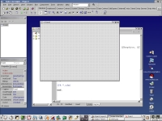
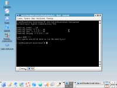

Приложения для Linux - вариант Kylix
Арсений Чеботарев, 04/2003, "Компьютеры+Программы"
Проблема
наличия или отсутствия пользовательских программ часто мешает
повсеместному распространению Linux. С другой стороны, делать
приложения "for Linux only" не всегда целесообразно, потому что
Windows, да и другие "оси", еще никто не отменял Желательно получить приложение,
которое "если что" можно выпустить в версии для нескольких ОС, получая
в результате простор для маневра. Вариантов для этого несколько:
- использовать Delphi и Kylix. Если проект уже
разработан на Delphi - и особенно с использованием переносимых
компонент - то задача еще более упрощается. Полученное приложение может
работать на обеих платформах, или говоря более сложным языком - в
гетерогенных средах. У Kylix есть несколько преимуществ перед
остальными вариантами: мощный оптимизированный код, знакомый многим
разработчикам интерфейс, доступность самой системы. К недостаткам можно
отнести ограниченный ареал применения - только на системах Linux с
определенным набором библиотек, хотя распространение Kylix это только
вопрос времени;
- использовать Java и, например, ONE Studio, на
"обеих трех" платформах. Это тоже очень хороший вариант: приложения не
потребуют перекомпиляции, доставку можно осуществлять по интернету, да
еще и не одним способом. Единственный drawback - это определенные
требования, предъявляемые к системам разработки и выполнения, в
частности к объему памяти и к пропускной способности сети;
- вариант номер три - использовать характерные
для Unix средства разработки, делая пользовательский интерфейс на
Tk/Tcl и/или courses. В качестве языка написания логики удобно
использовать perl, Python или, если вам так проще,- C. Это во многом
героический путь, поскольку инструменты разработки таких программ не
отличаются интуитивной понятностью - например, на изучение Emacs может
уйти полгода. Зато полученный код будет самым "честным" и легко
переносимым на все открытые платформы;
- сравнительно сложный, хоть и самый
универсальный путь - создание полнометражного веб-приложения, например,
на perl или PHP. Это потребует некоторых условий, таких как наличие
собственного (виртуального) сервера с широкими полномочиями - зато
такое приложение будет совершенно нейтрально к среде выполнения. Говоря
по правде, это решение совсем несправедливо занимает предпоследнее
место - просто это отдельный разговор, не совсем касающийся того, о чем
я собираюсь рассказать;
- пятый путь - запускать приложения в режиме
эмуляции ОС. Эта тема будет рассмотрена в данном номере. Из числа
универсальных виртуальных машин выделяются VMWare и VirtualPC. Большой
недостаток всех этих эмуляторов - проблемы совместимости и, кроме того,
падение производительности (примерно вдвое). Ко всему прочему, такие
методы, по сути, не относится к методам кроссплатформенной разработки.
В дальнейшем мы рассмотрим Kylix с, так
сказать, гуманитарной точки зрения. Подразумевается, что я не ставлю
себе цели научить вас программировать - и, тем более, не собираюсь
описывать пункты меню. Моя задача - показать вам, что в той или иной
среде разработки может оказаться полезным и как с минимальным
дискомфортом установить инструмент на свой компьютер. Остальное, как
говорится, RTFM.
Kylix
Kylix - революционная для своего времени
Delphi-подобная среда разработки для Linux и других систем,
поддерживающих бинарные форматы Linux. Kylix совмещает в себе
визуальные и текстовые возможности разработки приложений - так, как это
принято в современных инструментах - и позволяет создавать приложения с
графическим интерфейсом для Linux в сжатые сроки.
При ближайшем рассмотрении современный Kylix в
третьей инкарнации содержит в себе две оболочки IDE: для разработки
приложений на языке, который Borland именует "языком Delphi" и который
известен также как объектный Паскаль. Кроме того, в Kylix можно
разрабатывать программы на С++ в оболочке, воспроизводящей CBuilder.
Следует признать, что работа по переносу стиля и ощущения
Delphi/CBuilder была проделана немалая - с первого взгляда отличить
Kylix от Delphi практически невозможно (не считая KDE widgets).

Построение переносимого кода
В основе переносимого кода Delphi-Kylix лежит
независимый от платформы формат модулей и архитектура CLX. Последнее
обозначает Borland Component Library for Cross-Platform. В результате
компиляции строятся файлы в естественном для Linux формате ELF, а также
в формате общих библиотек.so. Как и Delphi, Kylix использует прямую
компиляцию в процессорные команды, то есть скорость приложений
сопоставима с кодом на С++.
Как и в случае с Delphi, разработчик может (в
ущерб переносимости) использовать системные функции, а также вызовы
Linux API и других специфичных для платформы библиотек. Если вы
разрабатываете компонент CLX, используя вызовы низкого уровня, и хотите
сделать его универсальным,- можете использовать условную компиляцию,
проверяя, определены ли символы LINUX и WIN32 соответственно c помощью
предложения $IFDEF/#ifdef. Для абсолютных экстремалов по-прежнему
существует возможность писать фрагменты кода на inline-ассемблере.
Для того чтобы писать переносимый код,
предназначенный для обоих платформ, не следует использовать другие
(кроме изоляции системных вызовов) особенности платформы: реестр
Windows, вызовы оконных функций SendMessage и PostMessage и т.п. Не
следует также забывать, что в Linux имена файлов и каталогов всегда
учитывают регистр, так что следует обратить внимание на их правильное
написание, в случаях когда имена задаются литерально.
Доступ к базам данных
Если под Windows возможно несколько методов
доступа к базам данных, то для Linux единственным методом является
прямое подключение к SQL-серверу через прилагаемый драйвер. Из
компонентов доступа "на выбор" только dbExpress, через который
поддерживаются распространенные базы данных: DB2, Informix, Interbase,
MySQL, Oracle и PostgreSQL.
Фактически dbExpress - это очень тонкий и
прозрачный уровень, непосредственно переводящий запросы в сервер. При
запросах к базам данных dbExpress порождает локальные копии данных,
освобождая сеанс с сервером. В процессе запроса предусмотрены
трансформации данных, вычисляемые поля и запросы с параметрами. После
запроса пользователь работает с полученной копией данных, внося
изменения в удаленные таблицы в режиме пакетных транзакций. Для
оптимизации трафика применяются режимы групповой пересылки обновлений,
а также отложенная загрузка BLOB-объектов.
После получения локального набора данных
значения столбцов поступают в привязанные к данным элементы управления
по упрощенной схеме. То есть исключаются дополнительные передачи
данных, как происходит в случае ODBC или ADO. Такой подход поощряет
делать клиентскую часть приложений "тонкой", перенося бизнес-логику в
хранимые процедуры на сервер баз данных. Это, в свою очередь, делает
приложения эффективнее, снижает трафик и делает уровень бизнес-логики
независимым от платформы.
Дополнительно к внешним источникам данных в
Kylix входит персональная, основанная на XML база данных - MyBase.
Таблицы этой БД хранятся полностью в памяти, поскольку она рассчитана
на молниеносную производительность. Код поддержки MyBase встраивается в
сам откомпилированный модуль и занимает около 300 Кб, так что не
требует ни отдельных файлов, ни отдельной инсталляции. Тем не менее,
эта "детка" понимает синтаксис SQL 92, сложные отношения между
таблицами, декларативную целостность, триггеры и так далее. Полезной
окажется также и возможность непосредственного создания таблиц MyBase
как результата запроса к внешним данным.
Сетевые возможности
Встроенные в Kylix протоколы интернета широко
и исчерпывающе представлены палитрами компонент Indy, которые названы
так в честь независимых разработчиков. Палитр, ни много ни мало, целых
пять:
- Clients. С TCP, UDP, HTTP, POP3, SMTP
все ясно. Не поленились реализовать также и, например, Gopher и IRC.
Для приверженцев командной строки существуют telnet, rsh и rexec - так
что опытный администратор может построить исключительно удобные для
него инструменты удаленного администрирования;
- Servers. Реализованы практически все
распространенные в Сети серверы. На этой же палитре в наличии также два
полезных компонента для построения туннельных подсетей - Tunnel Master
и Tunnel Slave;
- Misc. В эту категорию попали различные
кодировщики, например MIME и UUEncode,- так же как и ряд дополнительных
компонентов. Несколько компонентов упрощают организацию многопоточного
выполнения, характерного для асинхронных сетевых запросов;
- Intercepts. Перехватчики трафика, или
фильтры, созданы для "навешивания" кода на другие протоколы с целью
ведения журналов отладки, для кодирования-декодирования и сжатия
трафика "на лету";
- IO Handlers. Смысл всех этих компонент
- заменить чтение сокетов на более привычный асинхронный поточный
ввод-вывод. Весьма полезным и интересным компонентом является
ограничитель пропускной способности - на его основе можно строить
качественные и надежные приложения.
Веб-программирование представлено двумя
поколениями инструментов. Во-первых, это компоненты палитры Internet,
представляющие традиционный для Delphi набор WebDispatcher +
PageProducer. Несколько сложная на практике технология - в частности,
из-за отсутствия встроенного визуального редактора шаблонов. В Kylix,
что естественно, сервер приложений взаимодействует с сервером Apache.
Хорошей новостью является тот факт, что такое приложение, перенесенное
в среду Windows, станет работать и с Apache для Windows.
Второй подход к веб-программированию - компоненты, представленные на WebSnap.
BizSnap, WebSnap, DataSnap
Эти технологии напрямую связаны с такими
вещами, как XML, SOAP и веб-сервисы. Несмотря на довольно прихотливую
терминологию и наличие нескольких трудных мест, в основе веб-сервисов
лежит несколько простых принципов: для представления данных и удаленных
команд используется протокол HTTP, поверх которого передаются
специально оформленные в формате SOAP блоки XML данных. Подобно тому
как класс ActiveX или JavaBean способен самостоятельно перечислять свои
методы и тип их параметров, точно так же Web Services, установленные на
сервере, могут быть исследованы с помощью протокола WSDL. Таким же
образом в виде XML организованы вызовы и возврат значений удаленных
объектов в модели CORBA. Частным, но исключительно важным типом
передаваемых в XML данных являются таблицы как результат запросов к
СУБД - фактически многие SQL-серверы представляют результаты запросов
именно в этом виде.
Из-за обширности темы на этом я и закончу, а всех, кто интересуется данными технологиями, отсылаю к документации по Snap'ам.
Инсталляция
Официальные требования к целевой платформе разработки следующие:
- Intel Pentium II/500 МГц;
- 256 Мб RAM (обратите на этот параметр особое внимание!);
- CD-ROM;
- SVGA;
- мышь;
- место на диске:
 -250 Мб Open Ed.,
 -350 Мб Pro Ed.,
-500 Мб Enterprise Ed.
Система тестировалась на таких дистрибутивах:
- Red Hat® Linux 7.2;
- Mandrake™ 8.2;
- SuSE® Linux 7.3.
Впрочем, вы можете установить Kylix
практически на любой дистрибутив Linux и BSD, однако в некоторых
случаях придется проделать установку библиотек и настройку путей
вручную. Перед установкой системы можно убедиться, что ваш дистрибутив
Linux удовлетворяет требованиям Kylix'а, а именно:
- некоторые версии загрузчика libc могут
привести к нарушению данных при загрузке и выгрузке общих объектов, в
результате чего возникают ошибки сегментации в совсем других
программах. Kylix тоже подвержен этой "болезни" и не станет
инсталлироваться, если установлена эта версия libc. Эта проблема решена
в libc 2.2 или в патче к 1.2.1;
- Kylix и полученные приложения требуют glibc
версии 1.2.1 или более поздней, ядро версии, как минимум, 2.2 и
библиотеку libjpeg 6.2.
Все современные дистрибутивы Linux
удовлетворяют этим условиям, но часто указанные библиотеки скрываются
под различными типами инсталляции. Например, ASP Linux 7.3,
установленный в режиме "экспресс-инсталляция", не обладает всеми
необходимыми компонентами, и инсталляция вылетит с кодом ошибки 10. С
другой стороны, Red Hat 7.1, установленный в режиме Workstation, не
вызывает никаких проблем с Kylix.
Для проверки валидности вашей системы
существует специальная утилита - borpretest - расположенная в
одноименном каталоге на дистрибутивном диске. Для выполнения всех
проверок в автоматическом режиме запустите командный файл
/mnt/cdrom/borpretest/testsystem. Это не даст 100-процентной гарантии:
на том же ASP данный тест выдает Looks Good, но инсталляция не
завершается. Так что на тест надейся, но если что - придется
устанавливать недостающие пакеты вручную.
В положительном случае вы увидите сообщения, подобные тем, что показаны на рисунке.

Если borpretest обнаружит какие-то
проблемы, то с вопросом о том, как их решить, обращайтесь к файлу
/mnt/cdrom/PREINSTALL. После проверки системы (или без таковой)
запускаете /mnt/cdrom/setup.sh. Инсталляция предлагает на выбор
несколько типичных опций (вроде путей инсталляции и устанавливаемых
компонент) - но в основном отличается исключительной прямолинейностью.
Фактически все сводится к тому, чтобы трижды ответить Ok.
Важное замечание: вы можете инсталлировать
Kylix под административным (root) или пользовательским аккаунтом. В
первом случае файлы приложения будут размещены в каталоге
/usr/local/kylix3, причем примеры попадут только к вам в домашний
каталог - и чтобы сделать их доступными другим, вам придется или
скопировать, или назначить пользователям доступ к этим файлам в режиме
чтения. Если Kylix устанавливается обычным пользователем, то все файлы,
и программы и данные попадут в подкаталог домашнего каталога.
Вместе с Kylix'ом на диске (в каталоге
/dev/cdrom/jre) находится также и инсталляция Java RunTime версии
1.3.1. Это пакет rpm.bin, предназначенный для установки через командный
процессор sh. Обратите внимание: на самом пакете не установлен флаг
исполнения, поэтому запустить установку с лазерного диска вы не
сможете. Для инсталляции Java вам понадобится скопировать его куда-то:
rm /tmp/j2re*
[mount -t iso9660||cd9660 /dev/cdrom /mnt/cdrom||/cdrom]
cd /mnt/cdrom/jre/* /tmp
[umount /dev/cdrom]
chmod 777 /tmp/j2re*
/tmp/j2re*
rm /tmp/j2re*
|
Документация как основа успеха
Вопрос успешности того или иного продукта
часто зависит от наличия доступной и удобной документации. Признаюсь
откровенно: документация по Delphi очень долгое время была для меня
главным источником информации по многим аспектам Windows. Думаю, многие
скажут то же самое. Замечательный Delphi Help содержит в себе
исчерпывающую и доступную информацию не только по Паскалю, но также и
по Win API, Win32 и технологии OLE/COM. Вполне естественно было ожидать
такого же качества и от Kylix. Понятно, что вы не найдете здесь
описания Win32, но зато представлены сведения о доступных разработчику
средствах из арсенала Linux - libc, XFree и, конечно, полные сведения о
компонентах CLX. Справка Kylix Help выполнена в формате HyperHelp и
внешне больше похожа на справку в Windows 3.11, но поскольку оглавление
и поиск в наличии - то это не вызывает никаких неудобств.
Чего бы еще пожелать?
Создание моих первых приложений в Kylix прошло
без проблем и неожиданностей. Камнем преткновения при создании
реального приложения стало отсутствие современных средств для
визуальной разработки и отладки отчетов и шаблонов веб-страниц. Было бы
прекрасно создать такой инструмент - причем сделать его полиморфным для
генерации как HTML-шаблонов, так и отчетов в распространенных форматах
PDF, PostScript, TeX.
Другим крайне полезным инструментом мог бы
стать интегрированный UML-редактор со встроенной поддержкой отображения
как существующих, так и пользовательских CLX-классов, и автоматической
генерацией кода и таблиц. Фактически многие UML-редакторы третьих
производителей поддерживают CLX-классы, но встроенный инструмент мог бы
работать на уровне максимальной интеграции.
Конечно, применение RAD провоцирует
легкомысленное отношение к кодированию, так что вместе с Kylix в Linux
придут и "кудесники от Access". Мы живем в эпоху массового
производства, с этим уже поздно бороться - и все же: будете писать на
Kylix - делайте это хорошо, плз!
|